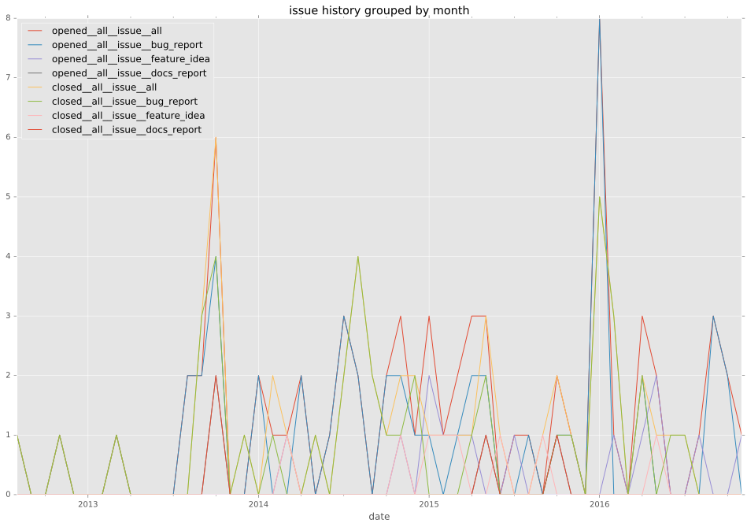
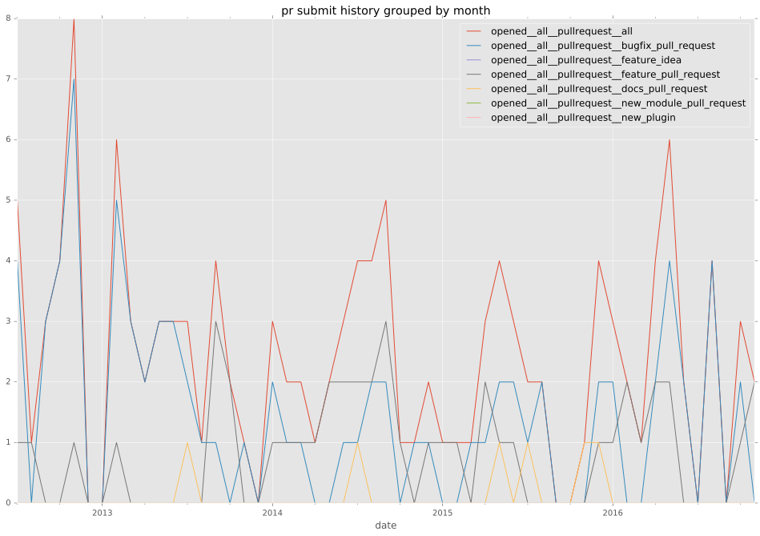

total issue counts
feature pull request: 39
docs report: 5
pullrequest: 133
docs pull request: 7
bugfix pull request: 87
feature idea: 12
issue: 68
bug report: 51
issue history

pullrequest history


days open by issue type
bugfix pull request
count: 132
std: 40.7358261177
min: 0
max: 209
median: 1.0
mean: 16.0681818182
all
count: 252
std: 67.3955731734
min: 0
max: 463
median: 3.0
mean: 30.0634920635
pullrequest
count: 0
std: nan
min: nan
max: nan
median: nan
mean: nan
docs pull request
count: 14
std: 17.3888937651
min: 0
max: 49
median: 0.0
mean: 8.28571428571
docs report
count: 5
std: 6.220932406
min: 0
max: 15
median: 9.0
mean: 8.2
feature pull request
count: 51
std: 71.542818661
min: 0
max: 262
median: 4.0
mean: 46.1568627451
feature idea
count: 6
std: 66.1052191586
min: 0
max: 176
median: 36.0
mean: 54.5
issue
count: 0
std: nan
min: nan
max: nan
median: nan
mean: nan
bug report
count: 44
std: 113.209311934
min: 0
max: 463
median: 6.0
mean: 59.4772727273
closures grouped by total days open